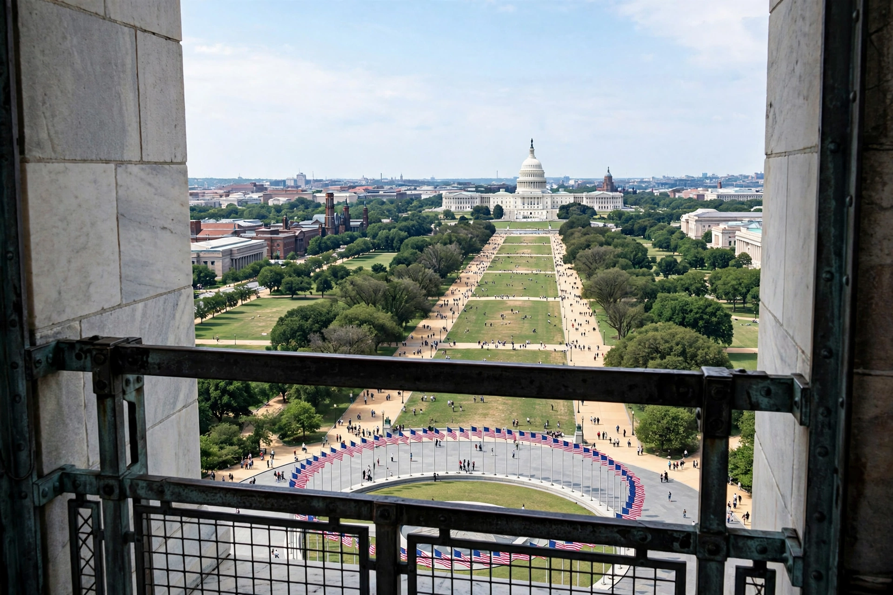

Washington, D.C.
From Wikipedia, the free encyclopedia

Washington, D.C., formally the District of Columbia, is the capital city of the United States, coextensive with the district created by the Constitution to serve as the federal capital outside any state. Founded in 1790 on land ceded by Maryland and Virginia (the Virginia portion returned in 1846), it was planned by Pierre L'Enfant and built around the Capitol, White House and the monumental National Mall. Its roughly 700,000 residents pay federal taxes yet lack voting representation in Congress — the grievance on its licence plates: 'Taxation Without Representation'.
History
Named for George Washington, the city was burned by the British in 1814, grew slowly as a government town (and a slave-trading centre until 1850), and was monumentalised by the McMillan Plan (1901–02). The Home Rule Act (1973) gave it an elected mayor and council under congressional oversight; the statehood movement (admission as the State of Washington, Douglass Commonwealth) has passed the House twice and stalled in the Senate.
The city
Beyond the federal core, D.C. is a majority-minority city of neighbourhoods (Georgetown, U Street — historic 'Black Broadway' — Adams Morgan, Anacostia), universities and museums (the Smithsonian's free museums on the Mall), with the Washington metropolitan area's 6+ million people spilling across Maryland and Virginia. Its economy is government, law, lobbying, international institutions (World Bank, IMF) and tourism — and its skyline is famously low, capped by the Heights of Buildings Act.